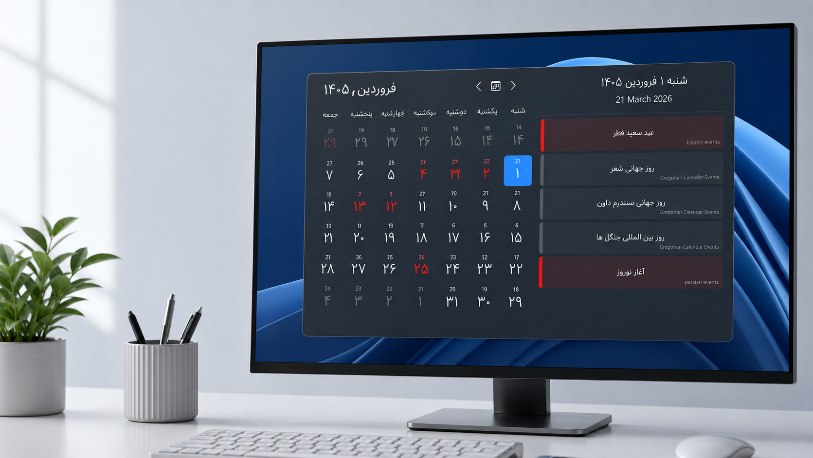
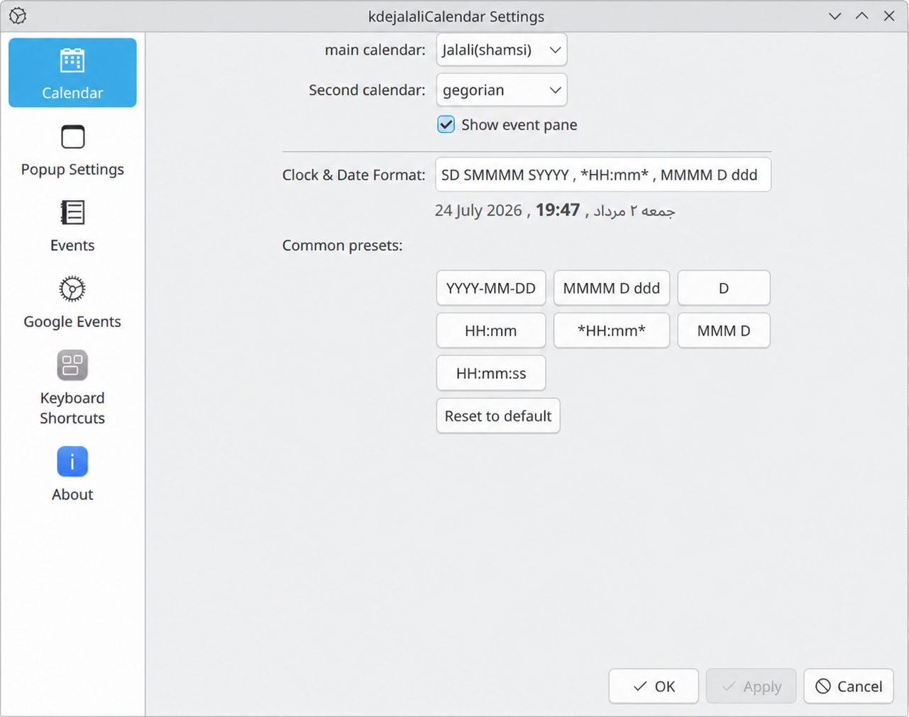

Three calendar systems
Choose Jalali, Gregorian, or Hijri independently for both your main and secondary calendar.

Jalali Calendar
A desktop calendar and clock widget for plasma6.
A better desktop calendar
Choose the calendar systems, events, and panel clock format that work for you, all from one Plasma widget.

Choose Jalali, Gregorian, or Hijri independently for both your main and secondary calendar.
Connect your Google Calendar so your schedule appears alongside local calendar events.
Pick from clock and date presets or create a custom format for the CompactRepresentation in your panel.
Show or hide Persian, Gregorian, Islamic, and ancient Persian events, with separate holiday controls.
Ready when you are